MAF Global Solutions · Marriott Mena House, Giza · 2021
MAF Global Solutions GS is One. One year, one team.
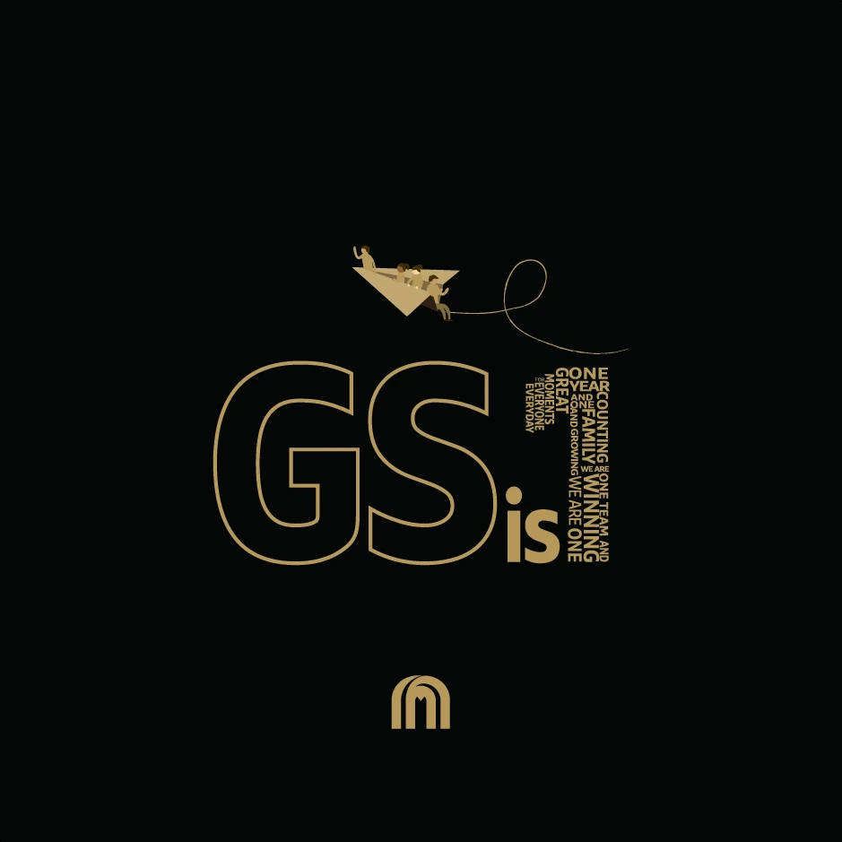

Creative direction, artwork and screen content · MAF Global SolutionsFirst anniversary · Marriott Mena House, Giza · 2021 · AntBrush with MCX
For MAF Global Solutions’ first anniversary, the number one brought the team’s story together across invitations, event artwork and screens. I led creative direction and production through AntBrush, with MCX managing the client relationship and Sky Gate Events building in Giza.
The place
On the lawn below the Great Pyramid.
Marriott Mena House, Giza, 26 and 27 October 2021.
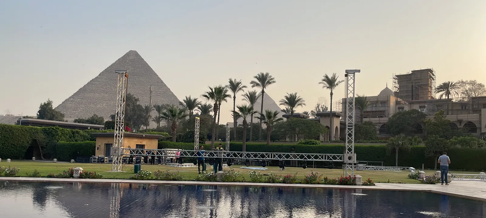
The idea
The number one, written in words.
One year. Counting. One family. Winning. We are one. The idea fits inside a single digit, and then the words stood up as a totem on the lawn.
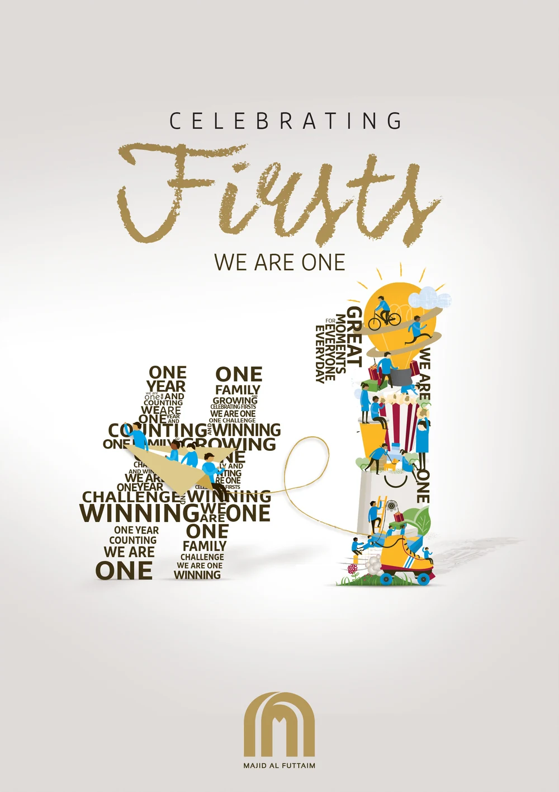

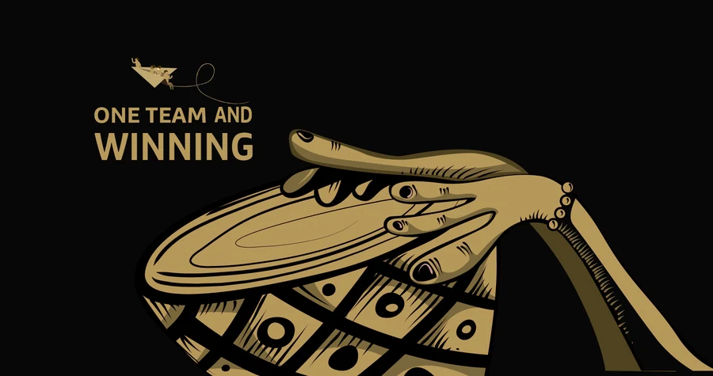
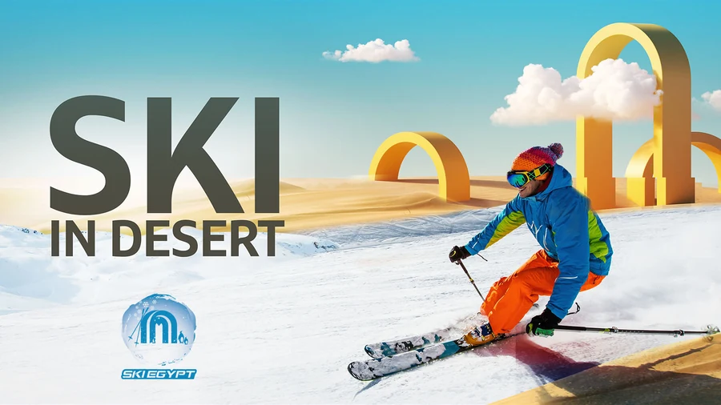
The stage
Three screens, moving together.
The centre screen and the two towers changed together, slide by slide, as the speech moved from each problem to its answer.
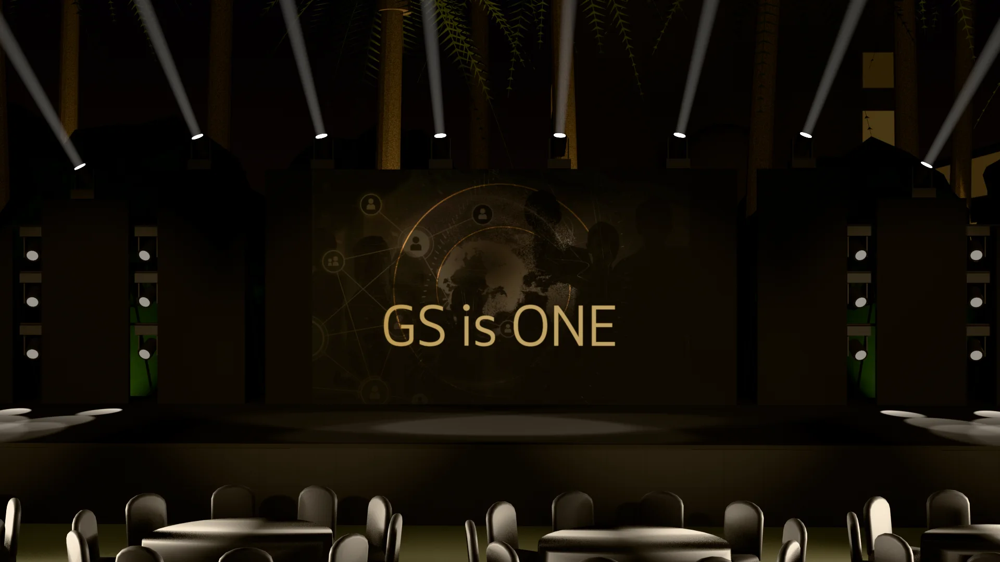


One lawn
Then the people.
The lawn of the Marriott Mena House, Giza, on the night of 27 October 2021.

What we delivered.
Invitation & print
- Invitation, GS.1
- Totems
Screens & content
- Screen content for the night
Event
- Venue, staging, screens and entertainment, built by Sky Gate Events
- Permits, from the tourism police and the syndicates
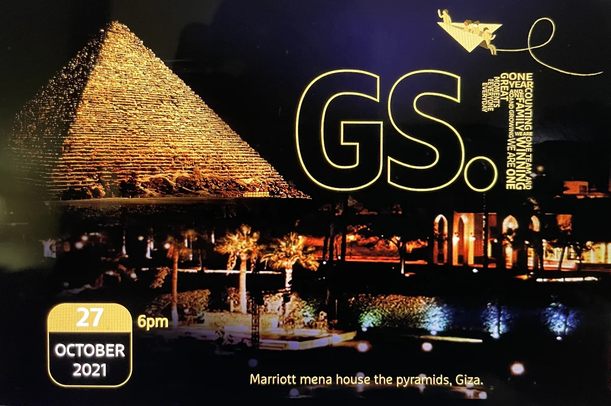
The invitation, GS.1 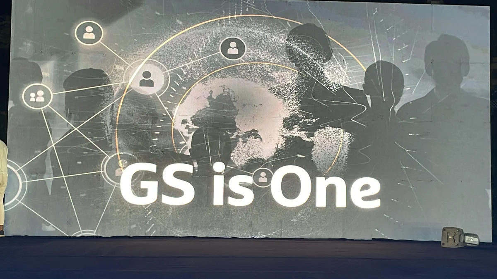
Screen content: GS is One 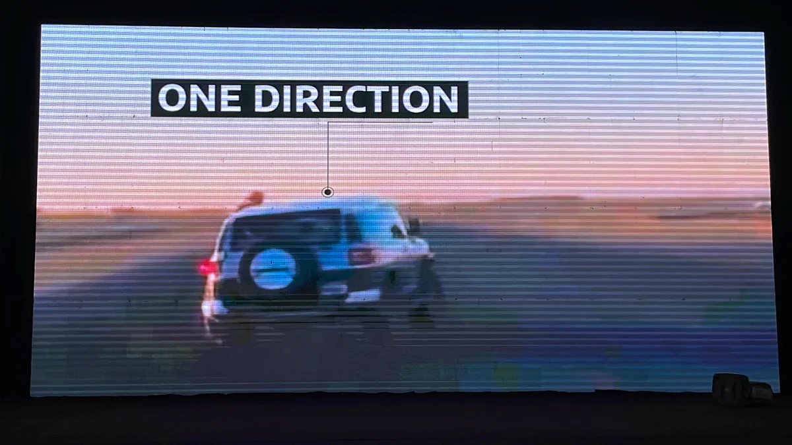
Screen content: one direction 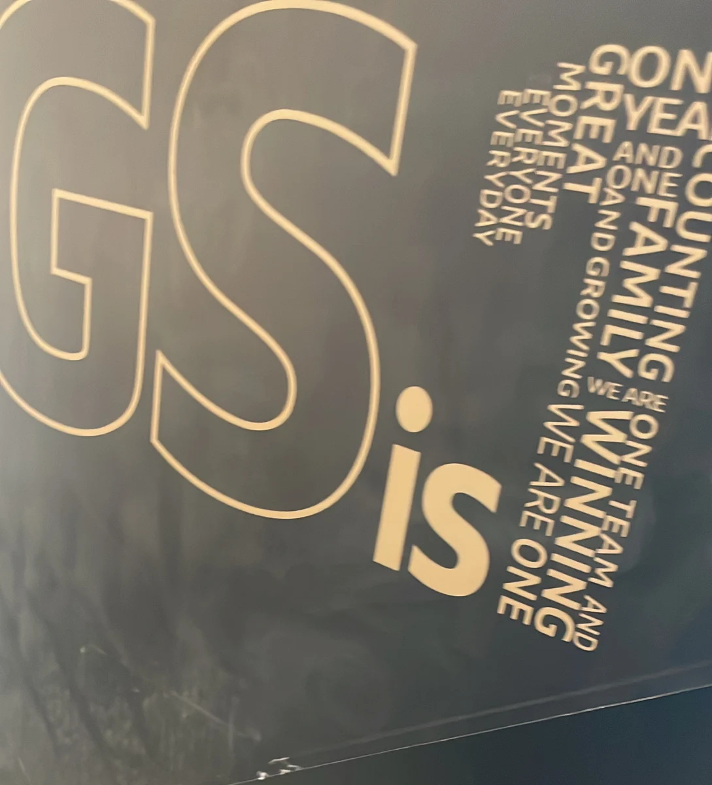
The totem of words 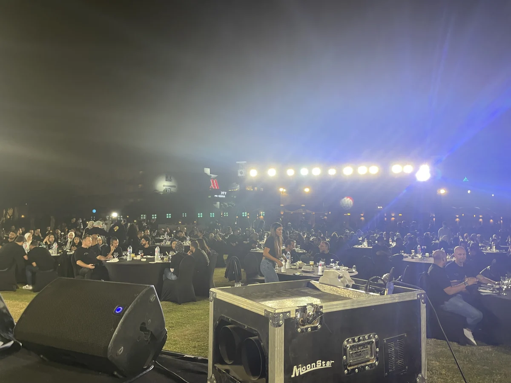
The night, 27 October 2021
From the invoices, the client’s reconciliation and photographs of the night.
The full story
Every step, in order.
For MAF Global Solutions, its first anniversary. MCX led the client relationship; Sky Gate Events built it in Egypt. The lawn is the venue.
See the full storyAbout 420 guests, on the lawn below the Great Pyramid.